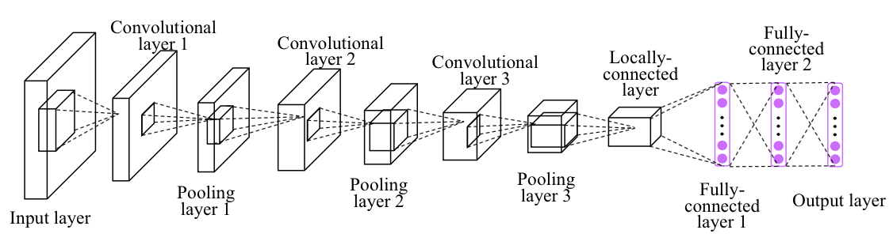
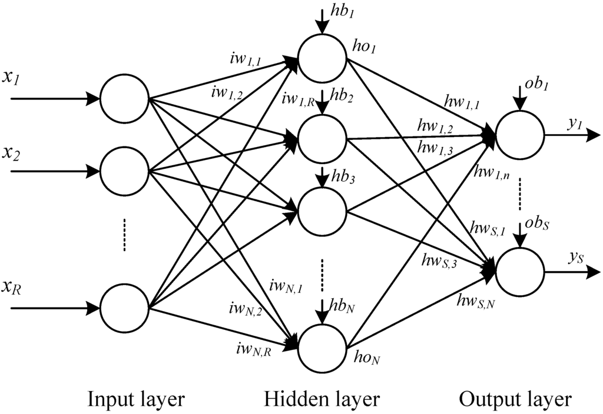
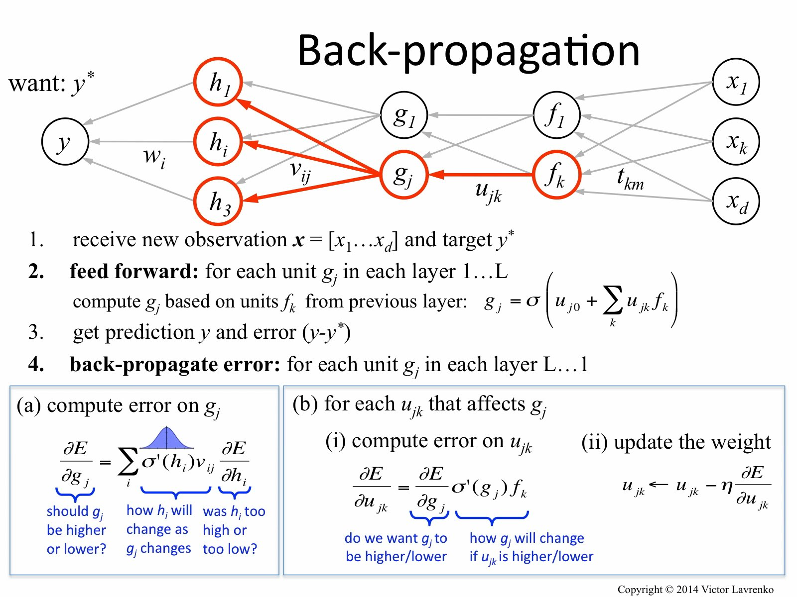
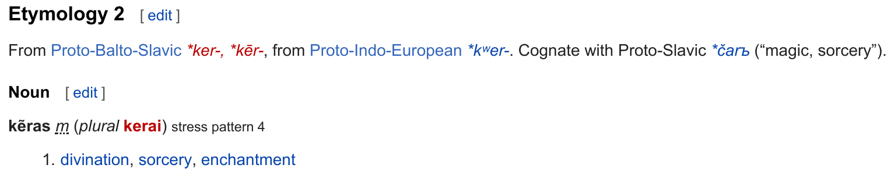
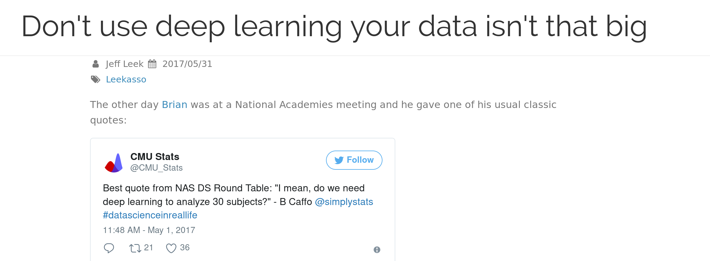
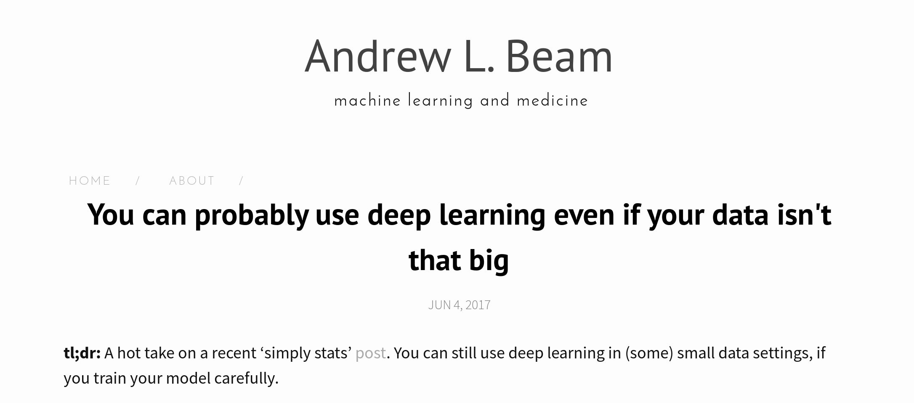
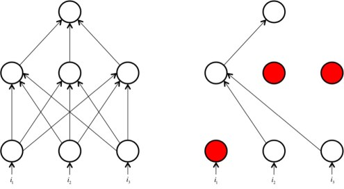
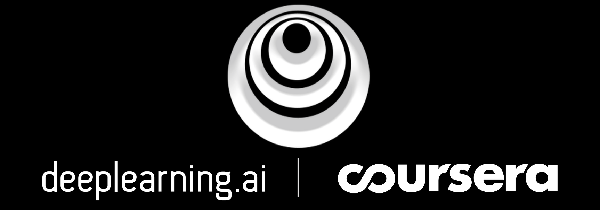

Building Neural Networks in R using Keras
Barton Rhodes @ DenverRUG
2017-08-10
About me
- Senior Data Scientist at Pandata LLC (http://pandata.co)
- Applying (“classical”) ML to cybersecurity
- Delving more into deep learning / AI methods
Acknowledgements
- rstudio/keras documentation
- Jason Mancuso (@jvmancuso)
- my wife Naya (for letting me borrow her laptop for this talk)
Disclaimer
Not a comprehensive introduction to deep learning, pointers to learning materials towards the end.
The talk and demo code can be accessed at https://git.io/v7ysE
Keras
Keras is a high-level neural networks API, written in Python and capable of running on top of TensorFlow, CNTK, or Theano.
Originally developed by François Chollet to facilitate AI research, the guiding principles were simplicity and rapid prototyping.
Being able to go from idea to result with the least possible delay is key to doing good research. (source: Keras.io)
What’s in a name?
Keras (κέρας) means horn in Greek. It is a reference to a literary image from ancient Greek and Latin literature, first found in the Odyssey, where dream spirits (Oneiroi, singular Oneiros) are divided between those who deceive men with false visions, who arrive to Earth through a gate of ivory, and those who announce a future that will come to pass, who arrive through a gate of horn. It’s a play on the words κέρας (horn) / κραίνω (fulfill), and ἐλέφας (ivory) / ἐλεφαίρομαι (deceive).
Keras was initially developed as part of the research effort of project ONEIROS (Open-ended Neuro-Electronic Intelligent Robot Operating System).
Neural Networks

Neurons

Popular activation functions
Hidden layers:
- sigmoid
- tanh
- ReLU (Rectifier Linear Unit)
Output layers:
- linear
- softmax
- sigmoid
- tanh
What makes it deep - Layers

How does it learn?

Supervised Learning
Given a dataset of input values \(X\) and the corresponding outputs \(y\), learn a generalizable function \(h(X)\).
DNNs are very effective at fitting non-linear \(h(X)\) and achieve SOA on supervised machine learning tasks.
Loss function
Loss (or cost) function is a function that tells us how much off we are from the true values \(y\).
Mean squared error is a famous one.
For classification problems, we will use categorical cross-entropy.
More losses here: https://keras.io/losses/
ML ~= Optimization
The objective of deep learning, then, is to update the weights between layers of the neural network so as to minimize the cost function on the test set.
Backpropagation

Tensors
What neural networks crave
Tensorflow, Theano, and friends
Deep Learning in a Nutshell
A better etymology? 
Some general considerations follow.
When not to use it

- no time to train, retrain, tune hyperparameters
- limited computational resources
- dataset limitations
Although…

Avoid overfitting

Dropout

CNNs

Intuitive introduction:
https://algobeans.com/2016/01/26/introduction-to-convolutional-neural-network/
keras and 🐍
Simple feedforward network in Python version of keras:
from keras.models import Sequential
model = Sequential()
from keras.layers import Dense, Activation
model.add(Dense(units=64, input_dim=100))
model.add(Activation('relu'))
model.add(Dense(units=10))
model.add(Activation('softmax'))
model.compile(loss=keras.losses.categorical_crossentropy,
optimizer=keras.optimizers.SGD(lr=0.01,
momentum=0.9,
nesterov=True))
model.fit(x_train, y_train, epochs=5, batch_size=32)
classes = model.predict(x_test, batch_size=128)https://keras.io/models/sequential/ https://keras.io/layers/core/
Keras and R
- Taylor Arnold’s kerasR:
https://github.com/statsmaths/kerasR
- J.J. Allaire’s rstudio/keras:
https://rstudio.github.io/keras/
Both rely on reticulate, R interface to Python.
Option 1: Install kerasR
Install Anaconda https://www.continuum.io/downloads
Create a new environment https://conda.io/docs/using/envs.html
conda create --name dlnn python=3.6 anaconda- Install TensorFlow (or Theano!) https://www.tensorflow.org/install/
Be sure to pick the GPU version if you have an NVIDIA card!
Option 1 (continued): Install kerasR
In R:
Install kerasR package (also reticulate)
install.packages("kerasR")Activate previously created Anaconda environment
reticulate::use_condaenv("dlnn")Test keras availability (should return TRUE)
reticulate::py_module_available("keras")
Option 2: Install rstudio/keras
- Install Anaconda
https://www.continuum.io/downloads
In RStudio:
- Install from GitHub (as of 08/17)
devtools::install_github("rstudio/keras")- Have RStudio handle keras installation
library(keras)
install_keras(method = conda, tensorflow_gpu = FALSE) # TRUE for GPUhttps://rstudio.github.io/keras/reference/install_keras.html
MNIST
We are going to train a CNN (convolutional neural network) on a MNIST dataset containing labeled digits 0-9.
Goal: given a labeled training set, correctly classify new images as the corresponding digit.

MNIST is a classic / clean dataset.
notMNIST is a more challenging dataset developed by Yaroslav Bulatov (Google Brain / OpenAI).

Useful for the demo code:
Concluding remarks
Keras is great for rapid prototyping and learning!
When not to use Keras?
- non-standard / research neural nets
- need a good debugger (TF / PyTorch)
- need a dynamic computational graph (use PyTorch!)
More Keras
More Deep Learning
Even More Deep Learning

More CNNs
More Deep Learning Theory
Questions
Thanks!
Let’s keep in touch:
- Email: b@bmorphism.us
- GitHub: https://github.com/bmorphism
- Data.world: https://data.world/bmorphism
- Twitter: @bmorphism